모션 라이브러리 사용법
1. 모션 라이브러리 개요
1.1 모션 제어 개요
반도체 등 정밀한 부품들을 조립 또는 검사하는 장비를 살펴보거나 공작물을 가공하는 공작 기계 등을 살펴 보면 눈에 두드러지게 보이는 것은 실제 운동이 일어나는 모션 제어부(이송시스템)라고 말할 수 있다. 여기서 모션이란 우리말로 운동을 뜻한다. 어떠한 물체가 한 점에서 다른 점으로 이동하는 것을 모션이라고 설명할 수 있다. 제어란 한마디로 조종의 개념이다. 우리가 원하는 방향과 위치로 대상물을 움직이게 하는 것을 뜻하 는 것이다. 결국 모션 제어란 앞에서 설명한 모션과 제어의 조합으로써 어떠한 물체를 우리가 움직이고자하 는 방향으로 이동시키는 것이라고 정의할 수 있다. 모션 제어를 하기 위해서는 아래 그림에서 보는 바와 같 은 구성품이 필요하다.
- (직선)이송부: 직선 운동이 발생하는 기구부
- 서보 모터: 동력을 발생시키는 장치
- 서보 드라이브: 서보 모터에 전류를 흘려주는 장치
- 모션 제어기: 모션을 제어하기 위한 각종 신호를 발생시키는 장치
- 전장부: 모션 제어기와 서보 드라이브 등을 연결하기 위한 단자대 외 기타 연결 장치
- PC: PC프로그래밍을 통해 모션 제어기를 제어하는 최상위 장치
- 모션 라이브러리: 모션 제어기를 구동하는 함수
{kind=link}
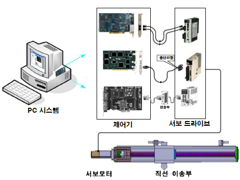
1.2 모션 라이브러리 개요
최근 장비 프로그래밍은 MS Windows 상에서 프로그래밍하는 윈도우 프로그래밍이 주종을 이루고 있다. 프로 그래밍 툴(Tool)에는 Visual C++, C++ Builder, Delphi, Visual Basic 등의 다양한 툴들이 제공되고 있으며, AXL 에서는 이러한 모든 툴들에서 활용이 가능한 API 함수들을 제공하고 있다. 특히 모션 구동에 대한 라이브러 리 함수들은 일반적인 기구부의 기계적인 신호 및 범용입출력 신호에 대한 세부적인 제어에서부터 단축 및 다축 보간 구동 기능에 관한 함수까지 매우 세분화된 함수들을 제공하고 있어 사용자가 필요로 하는 모든 모 션 제어에 활용할 수 있도록 되어있다
본 User Guide 에서는 단축 및 다축 구동뿐만 아니라 보간기능까지 지원하는 집중형 보드와 네트워크 마스터 보드의 모션 제어 를 구동하기 위한 라이브러리 함수들에 대하여 설명한다. 모션 라이브러리를 사용하여 Stepping 및 Servo Motor 등을 정밀 제어할 수 있으며, 연속적인 모션 제어, 원점 검출, 속도 오버라이드 및 이동량 오버라이드 , 직선 보간, 원호 보간등을 쉽고 빠르게 적용할 수 있다.
기본적인 모션 구동은 초기화 및 종료 , 입출력 신호 , 파라미터 설정 및 확인, 서보 On/Off, 신호 검색 구동, 단 축 위치 구동, 단축 속도 구동, 구동 상태 및 정지 상태 모니터링, 단축 구동의 정지로 크게 나눌 수 있으며 아래와 같은 순서로 이루어 진다. 각 장마다 그 장에 필요한 하드웨어의 개념과 기본 함수, 그리고 기본 함수 의 예제를 기초로 하여 설명한다
{kind=link}
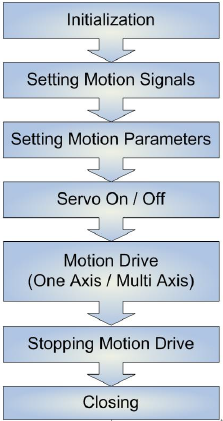
2. 초기화 & 종료
AXL 라이브러리의 초기화 작업은 AxlOpen 함수를 실행함으로써 이루어진다 . AxlOpen 함수를 실행하면 내부 적으로 라이브러리의 초기화뿐만 아니라 설치되어 있는 H/W 에 설정된 파라미터를 모두 초기화하게 된다 . 사 용자는 모션 라이브러리를 사용하기 전 EzConfig 를 사용하여 PC 시스템에 모션 관련 제품이 올바르게 장착되 어있 는지 확인해 야 한다
라이브러리의 초기화
AxlOpen : AxlOpen 함수는 라이브러리를 초기화 하는 함수이다. 사용자가 인터럽트를 사용할 경우 인터럽트 를 처리할 IRQ 번호를 등록한다. 특히 PCI 타입의 베이스 보드에서는 IRQ 번호를 자동으로 생성하므로 라이 브러리 초기화 시 입력한 IRQ 번호는 무시된다.
// 라이브러리를 초기화한다.
// 7은 IRQ를 뜻한다. PCI에서 자동으로 IRQ가 설정되므로 무시되는 값이다.
if (AxlOpen(7) == AXT_RT_SUCCESS))
printf("라이브러리가 초기화되었습니다.");
// 라이브러리를 초기화한다.
// 7은 IRQ를 뜻한다. PCI에서 자동으로 IRQ가 설정되므로 무시되는 값이다.
if (AxlOpenNoReset(7) == AXT_RT_SUCCESS)
printf("라이브러리가 초기화되었습니다.");
라이브러리의 종료
AxlClose : AxlClose 함수는 라이브러리를 종료하는 함수이다. 라이브러리를 사용한 후에는 마지막에 반드시 종료시켜서 할당된 메모리를 반환하여야 한다. 함수가 정상 실행되어 라이브러리가 종료되면 TRUE를 반환하 고, 그렇지 않은 경우에는 FALSE를 반환한다.
// 라이브러리를 종료한다.
if (AxlClose())
printf("라이브러리가 종료되었습니다.");
3. 모션 파라미터
모션 파라미터는 모션 시스템을 이루는 각 부분의 올바른 동작을 위한 설정 값이다. 모션 시스템은 기구부와 서보 드라이버 및 서보 모터, 전장부, 모션 제어기 등 여러 가지 장치들이 조합되어 있으며, 각 구성요소들 마다 다양한 파라미터가 사용된다. 모션 파라미터의 특성상 부분적으로 설정이 잘못되어도 전체 시스템은 오동작을 하거나 에러를 발생시킬 수 있으므로 신중하고 정확하게 설정하여야 한다. 모션 제어기에 설정해주어야할 모션 파라미터는 아래와 같으며, 각각의 의미를 간단하게 살펴보면 다음과 같다.
3.1 Unit per Pulse
- 명령으로 내려주는 지령 값의 단위를 설정하는 값이다.
기본적으로 사용자가 라이브러리의 명령어에서 지정해주는 이동 거리 지령 값은 아래의 그림에서와 같이 두 번의 단위 변환 과정을 거치게 된다.
{kind=link}
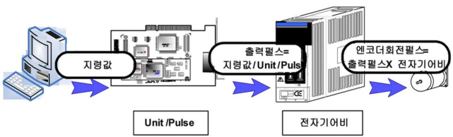
소프트웨어 상에서 이동량을 입력하면, 설정된 Unit/Pulse라는 파라미터에 의해 모션 제어기의 출력 펄스 수가 결정된다. 네트워크 형태의 제어기는 실제 펄스를 출력하는 것이 아닌 서보 드라이버로 펄스의 증가량을 직접 전달하는 방식으로 펄스를 전달하는 방식과 동일한 원리로 동작한다. 또한 이 출력 펄스는 서보 드라이브에 설정되어있는 전자기어비라는 파라미터에 의해 또 한번 변환되어 실제 모터를 구동시키는 구동 펄스 수가 결정된다.
※ Electronic gear Ratio (전자기어비) Unit/Pulse는 모션 제어기에서 설정하는 파라미터이나 전자기어비는 서보 드라이브에서 설정하는 파라미터이다.
{kind=link}
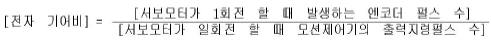
17비트의 엔코더를 사용한다고 하면, 위의 식으로 131,072 개의 엔코더의 펄스 수는 모션 제어기에서 10,000으로 줄일 수 있다. 즉 서보 모터 엔코더의 회전 정밀도를 기구부의 정밀도 만큼으로 낮추는 것이 전자기어비다.
예를들어 20mm 볼 스크류, 기어비는 1/2 이고 모터 1회전에 필요한 펄스 수가 10000일 때, Pulse = 10000과 Unit = 10 으로 설정하면 1mm 움직이는 거리당 출력되는 펄스 수 = 1000 펄스가 된다.
{kind=link}
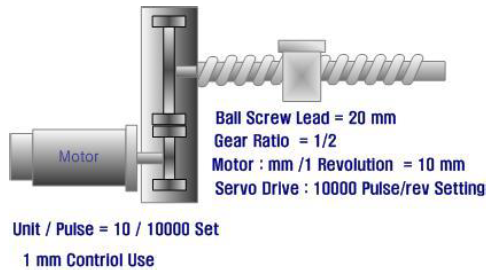
3.2 Start / Stop Speed
- 구동부의 시작 및 종료 시의 속도를 설정한다.
초기 속도는 모션 구동의 기준점이 되므로 반드시 설정하여야 한다.
3.3 Pulse Out Method
- 모션 제어기에서 서보 드라이브로 출력하는 펄스의 형태를 설정한다.
사용자가 지령하는 구동 명령은 아래의 그림에서와 같이 모션 제어기가 지령 값에 의해 서보 드라이브로 펄스를 전송하고,
서보 드라이브는 다시 서보 모터를 구동시키는 구조로 되어 있다.
네트워크 슬레이브로 통신 케이블과 직접 연결되는 서보 드라이브와는 관계없는 파라미터이며,
네트워크 슬레이브 중 RTEX-PM과 같은 펄스 출력형 모션제어기는 Pulse Out Method 를 설정 하여야 한다
{kind=link}
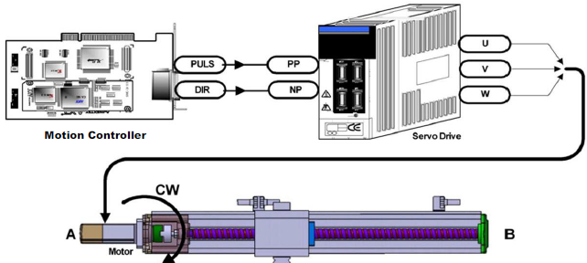
서보 드라이브로 출력되는 모션 제어기의 PULS, DIR의 펄스 출력 방식은 One Pulse방식과 Two Pulse방식으로 구분한다.
One Pulse 방식
One Pulse방식에서는 모션 제어기의 PULS핀에서 회전량에 해당하는 개수의 펄스를 출력하고, DIR핀에서는 회
전 방향에 해당하는 신호 레벨을 출력한다. 아래 그림에서 보는 바와 같이 1펄스 출력 방식은 PULS 신호의
Active여부와 (+) 방향의 명령을 주었을 때 DIR의 신호 레벨과 (-) 명령을 주었을 때 DIR의 신호 레벨을 설정
하는 부분으로 구성되어 있다. 서보 드라이브와 서보 모터에 따라 조금씩의 차이가 있으므로, 해당 서보드라
이브에 어떠한 방식으로 설정되어 있는지에 주의하여 모션 제어기의 펄스 출력 방식을 설정하여야 한다.
{kind=link}
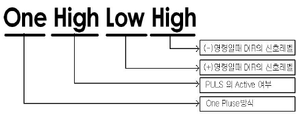
{kind=link}
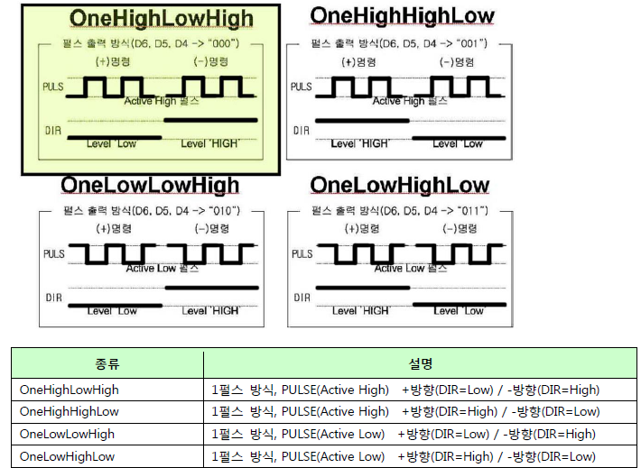
Two Pulse 방식
Two pulse방식은 PULS 핀에서 나오는 펄스 신호와 DIR 핀에서 나오는 펄스 신호가 각각 회전량과 회전 방향을 동시에 표현하도록 구성된 출력 방식이다.
아래 그림에서 보는 바와 같이 2 펄스 출력 방식은 (+) 방향의 명령을 주었을 때 신호가 출력될 핀을 설정하는 부분과
(-) 방향의 명령을 주었을 때 신호가 출력될 핀을 설정하는 부분 및 신호의 Active 여부로 구성되어 있다.
여기서 Cw는 PULS핀을 , Ccw는 DIR핀을 의미한다.
{kind=link}
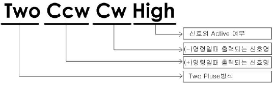
{kind=link}
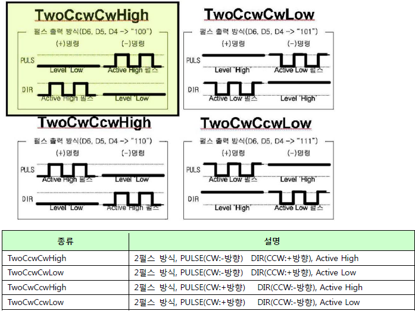
3.4 Encoder Input Method
- 서보 드라이브에서 모션 제어기로 보내주는 엔코더 신호를 받아들이는 방식을 설정한다.
서보 모터가 회전 하면 구동 축에 연결되어 있는 엔코더에서 회전량에 따른 펄스가 출력된다.
엔코더는 일반적으로 A 상과 B 상, 그리고 Z 상의 세 종류의 펄스가 출력되는데, A 상과 B 상은 90 °의 위상차를 가진다.
즉 모터가 정방향으로 회전할 때에 A 상이 먼저 발생하고, 이어서 90 지연되어 B 상의 펄스가 나타나는 것이다.
또한 Z 상은 모터가 한 바퀴 회전할 때마다 발생하는 펄스이다.
이러한 펄스를 카운트하여 모터의 회전량을 피드백 받을 수 있다.
네트워크 슬레이브로 통신 케이블과 직접 연결되는 서보 드라이브와는 관계없는 파라미터이며, 네트워크 슬 레이브 중 RTEX PM과 같은 펄스 출력형 모션 제어기는 Encoder Input Method를 설정하여야 한다.
엔코더의 A 상과 B 상을 이용하여 기존의 주파수의 배수에 해당하는 신호를 만들어낼 수 있는데, 이러한 신호 획득 방법을 체배 라고 한다. 그림에서 A는 2체배를 B는 4체배를 보여주고 있다.
{kind=link}
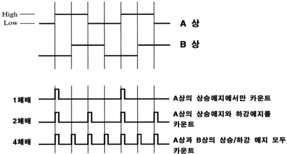
4. 모션 신호
Signal은 크게 Motion Signal, Universal Input Signal, Universal Output Signal로 나눌 수 있다. Motion Signal은 기구부의 구동에 대한 상태를 알려주는 각종 센서와 서보 드라이브의 상태를 알려주는 신호들로 구성되어 있고, Universal Input Signal은 사용자가 임의로 사용 가능한 입력 신호들이며, Universal Output Signal은 사용자가 임의로 사용이 가능한 출력 신호들이라고 할 수 있다. 범용 입/출력신호(Universal Input/Output) 중 일부는 모션 제어기의 기본 기능으로 이미 사용되고 있으므로 사용자는 제품마다 실제 사용 가능한 범용 입 출력을 반드시 확인하고 사용하여야 한다.
1) Motion Signal
Motion Signal은 기구부의 구동에 대한 상태를 알려주는 각종 센서와 서보드라이브의 상태를 알려주는 신호들을 말한다.
{kind=link}
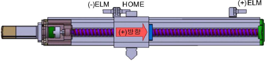
End Limit
기구부의 이송 구역을 지정하는 센서에서 발생되어 모션 제어기로 전달되는 신호로써 +,-로 구분되어져 기구부 양쪽에 설치되어 있다.
일반적으로 기구부의 이송 중 리미트 신호가 발생하면 모션 제어기는 펄스 출력을 바로 중단하고 기구부는 급정지하게 된다.
Inposition
서보 드라이브의 출력 신호로 서보 모터의 위치가 서보 드라이브에 설정해둔 인포지션 범위 내에 들어오면
서보 드라이브는 Inposition 신호를 모션 제어기에 전달한다.
즉 목표 위치 도달 여부 확인용 신호라고 할 수 있다.
Alarm
서보 드라이브의 출력 신호로 서보 모터에 이상 전류가 발생하거나 작동 오류가 생겼을 경우 서보 드라이브
에서 모션 제어기에 Alarm 신호를 전달한다.
Emergency Stop
모션 제어기에 이 신호 가 입력되면 모션 제어기는 펄스 출력을 바로 중단하고, 기구부는 급정지한다.
이 신호는 일반적으로 장비에 설치된 비상 스위치와 연결되어 있다.
2) Universal Input Signal
사용자가 임의로 활용 가능한 범용 입력을 말한다.
사용자는 범용 입력값 을 확인하여 센서 등의 현재 신호상태를 확인하고 제어에 응용 할 수 있다.
범용 입력 신호 중 원점 센서 입력 , 서보 알람 입력 등의 신호는 기본적으로 모션 제어기의 기능으로 할당되어 있으며,
만일 기본 기능으로 사용하지 않는다면 범용 입력으로 사용할 수 있다.
3) Universal Output Signal
사용자가 임의로 활용 가능한 범용 출력을 말한다.
사용자는 범용 출력 비트를 사용하여 신호 출력 또는 엑츄에이터의 작동 스위치 등으로 활용할 수 있다.
4.1 모션 신호 설정
4.1.1 신호 레벨 및 사용 유무 설정
각 기구부 센서의 특성에 따라 다른 Signal이 발생하는데, 그 신호의 특성에 맞게 Active Level을 설정하여야 한다. 설정 값으로는 LOW(0), HIGH(1), UNUSED(2), USED(3)가 있고, LOW또는 HIGH의 레벨을 설정하면 자동으로 USED라고 판단한다. 예를 들어, 센서가 물체를 감지할 때 모션 제어기 내부 신호가 HIGH로 된다면, ActiveHIGH로 설정하게 된다. 각각의 신호를 사용하지 않음으로 설정하면 신호가 입력되더라도 관여하지 않게 된다. 사용자가 기구부의 센서의 설치 유무를 파악하여 설정하면 된다.
- End Limit 신호
일반적으로 모션 제어기는 내부 회로를 보호하기 위해 포토 커플러를 이용하여 외부에서 입력되는 신호(N24V)와 내부 신호(5V)가 전기적으로 절연된다.
아래의 그림에서 보는 바와 같이 Limit 센서가 감지되지 않았을 때 Open상태를 유지하고, 감지되면 Close(N24V-, LOW신호)를 발생시키는 경우 포토커플러에 의해 반전된 신호가 내부 모션 제어기로 입력되어 적절한 동작을 수행한다. 예를 들어, 아래의 그림의 경우 보드 타입 모션 제어기 PCI-N804와 연결할 경우 “Active HIGH”로 신호 레벨을 설정하여야 한다.
End Limit 센서는 기구부의 +방향(Positive)과 –방향(Negative)의 두 개가 있을 수 있다. 각 신호에 대하여AxmSignalSetLimit 함수를 이용하여 설정한다. 아래 그림의 경우 End Limit Level을 둘 다 Active High로 설정하고, 리밋센서 검출 시 급정지하도록 설정하여 사용하고자 한다면 다음과 같이 한다.// 0축의 –End limit 과 +End limit의 Active level 을 HIGH로 설정한다. Default : HIGH long lAxisNo = 0; DWORD uStopMode = 0 // [0]급정지, [1]감속 정지 DWORD uPositiveLevel = HIGH; DWORD uNegativeLevel = HIGH; AxmSignalSetLimit(lAxisNo, uStopMode, uPositiveLevel, uNegativeLevel);
{kind=link}
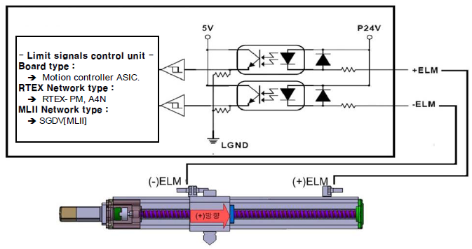
- Inposition 신호(기능)
모션 구동 후 실제 모터의 위치가 지령한 위치 근처에 도달하였는지를 자동으로 반영하여 구동을 완료하는 기능이다. Inposition 신호(기능)을 사용하기 위해서는 서보 드라이브와 직접 연결된 보드 타입 제품의 경우 서버 드라이브의 종류 및 설정에 따라 Active level을 설정하여야 하며, 네트워크 타입으로 연결된 서보 드라이브는 Used/Unused 설정으로 사용 유무만을 설정하면 된다. Inposition 신호(기능)를 올바르게 설정하였다면, 구동 후 모터가 최종 목표 위치에 도달할 때까지 AxmStatusReadInMotion 으로 확인할 수 있는 “모션 구동 중”상태가 지속된다. 비정상적으로 “모션 구동 중”상태가 지속될 경우 AxmMoveStop 등으로 현재 구동을 종료하여야 한다. “모션 구동 중” 상태에서 모션 구동을 할 경우 AXT_RT_MOTION_ERROR_IN_MOTION(4152) 가 리턴된다. 인포지션 신호의 사용유무 및 Active Level을 설정할 때에는 AxmSignalSetInpos 함수를 사용하며, Inposition 신호의 Active Level을 Active HIGH로 설정하여 사용하려면 아래와 같이 한다.// 0축의 Inposition 신호의 입력 레벨을 설정한다. Default : HIGH long lAxisNo =0; DWORD uUse = HIGH; AxmSignalSetInpos(lAxisNo, uUse); - Alarm 신호
서보 드라이브는 비정상적인 구동 불가 상태가 발생하여 알람이 발생했음에도 동작을 시키면, 모터 구동이 불가능해진다. 이런 경우 모션 제어기는 현재 구동 중인 모션을 정지하고 사용자에게 현재 상태를 알 수 있도록 하여야 한다. 알람 발생 원인을 제거 후 현재 알람 상태를 벗어나기 위해서는 AxmSignalServoAlarmReset 함수를 사용할 수 있다. 알람 신호(정보)의 사용유무 및 Active Level를 설정할 때에는 AxmSignalSetServoAlarm 함수를 사용하며, 현재의 상태를 확인할 때는 AxmSignalReadServoAlarm 함수를 사용한다. Alarm 신호의 Active Level을 Active LOW로 설정하려면 아래와 같이 한다.// 0축의 알람 신호의 입력 레벨을 설정한다. Default : HIGH long lAxisNo =0; DWORD uUse = HIGH; AxmSignalSetServoAlarm(lAxisNo, uUse); - Emergency Stop 신호
급정지 신호의 사용유무 및 Active Level을 설정할 때에는 AxmSignalSetStop 함수를 사용하며, Emergency Stop 신호의 Active Level을 Active HIGH로 설정하여 급정지 하도록 하려면 아래와 같이 한다.//0축의 비상 정지 신호(ESTOP)의 입력 레벨을 설정한다. Default : HIGH long lAxisNo =0; DWORD uStopMode = 0; DWORD uLevel = HIGH; AxmSignalSetStop(lAxisNo, uStopMode, uLevel);
4.1.2 신호 읽기
- End Limit 신호의 입력 확인
기구부가 End Limit 센서를 통과할 때 +/-End Limit 신호가 입력 되었는지를 확인하고자 한다면AxmSignalReadLimit 함수를 사용하며, 현재 End Limit 신호의 상태를 0또는 1로 반환한다. 센서가 감지되지 않았는데도 현재 상태가 ‘1’로 반환된다면 현재 설정된 Active Level이 센서 입력상태와 반대로 설정되었거나 센서의 전기적인 연결 불량, 센서 자체의 불량을 점검하여야 한다.// 0축의 End Limit 신호를 확인한다. long lAxisNo = 0; DWORD uPositiveStatus, uNegativeStatus; AxmSignalReadLimit(lAxisNo, &uPositiveStatus, &uNegativeStatus); printf(“+ELM : %x , -ELM : %x \n”, uPositiveStatus, uNegativeStatus); - Inposition Signal(상태) 입력 확인
이송부가 이동하여 모션 제어기에서 명령한 위치까지 이동하였을 때 발생하는 Inposition 신호(상태)가 입력되었는지를 확인할 때 AxmSignalReadInpos 함수를 사용한다.// 0축의 Inosition 신호의 입력 여부를 확인할 때 사용한다. long lAxisNo = 0; DWORD uStatus; AxmSignalReadInpos(lAxisNo, &uStatus); printf(“0축의 Inposition 여부 : %x \n”, uStatus); - Alarm Signal 입력 여부 (Alarm 상태)확인
기구부가 원하는 위치로 구동하지 않고 이상 구동을 할 때 서보 드라이브는 모션 제어기로 Alarm 신호를 출력하는데 이 신호가 입력 되었는지를 확인할 때 AxmSignalReadServoAlarm 함수를 사용한다.// Alarm 신호의 입력 여부를 확인할 때 사용한다. long lAxisNo = 0; DWORD uStatus; AxmSignalReadServoAlarm(lAxisNo, &uStatus); printf(“0축의 Alarm 여부 : %x \n”, uStatus); - Emergency Stop Signal 입력 여부 확인
기구부의 오작동이나 이상작동에 의해 긴급히 기구부의 작동을 멈출 때 Emergency Stop 신호가 발생하는데, Emergency Stop 신호가 입력되었는지를 확인할 때 AxmSignalReadStop 함수를 사용한다.// Emergency Stop 신호의 입력 여부를 확인할 때 사용한다. long lAxisNo = 0; DWORD uStatus; AxmSignalReadStop(lAxisNo, &uStatus); printf(“0축의 Emergency Stop 여부 : %x \n”, uStatus);
4.2 범용 입출력 신호의 읽기 및 출력 쓰기
모션 제어기에는 사용자가 임의로 사용할 수 있는 범용 입출력을 축별로 제공한다. 사용자 임의로 활용 가능한 범용 입/출력 신호(Universal Input/Output Signal)는 다음과 같다.
| 제품명 | 범용 입력 | 범용 출력 |
|---|---|---|
| SMC-2V04 PCI-N404 PCI-N804 N3Slave-PM |
UIN(0) : 원점 신호 UIN(1) : Encoder Z상 신호 UIN(2~4) : 범용 입력 신호 UIN(5) : 범용 입력(SMC-2V04) |
UOUT(0) : 서보 On/Off 신호 UOUT(1) : 알람 제거 신호 UOUT(2~4) : 범용 출력 UOUT(5) : 범용 출력(SMC-2V04) |
| RTEX-A4N | UIN(0) : 원점 신호(HOME) UIN(1) : 사용하지 않음 UIN(2~5) : 범용 입력(EX-IN2~5) |
UOUT(0) : 서보 On/Off 기능 UOUT(1) : 사용하지 않음 UOUT(2~3) : 범용 출력(EX-OUT1~2) |
| JEPMC-PL2910 | UIN(0) : 원점 신호(ZRNn 신호) UIN(1) : 사용하지 않음 UIN(2) : 범용 입력 신호(INn) |
UOUT(0) : 서보 On/Off 기능 UOUT(1) : 알람 제거 기능 UOUT(2) : 범용 출력(OUTn) |
| SGDV-xxxx11A | UIN(0) : 원점 신호(EXT1 신호) UIN(1) : Encoder Z상(PC 신호) UIN(2) : +End limit(EXT2 신호) UIN(3) : -End limit(EXT3 신호) |
UOUT(0) : 서보 On/Off 기능 UOUT(1) : 알람 제거 기능 |
범용 입출력 비트의 상태 확인은 AxmSignalReadInput 함수 또는 AxmSignalReadOutput를 이용하여 한번에 읽어오는 방법 이외에 AxmSignalReadInputBit 함수 또는 AxmSignalReadOutputBit 함수를 이용하여 개별적으로 0~5번까지 6개 Bit의 상태를 확인하는 방법이 있으며, 해당 비트의 신호 상태에 따라 0또는 1을 반환한다.
// 0번 축의 0번 범용 입력 비트 신호의 상태를 확인한다.
long lAxisNo = 0;
long lBitNo = 0;
DWORD uOn;
AxmSignalReadInputBit(lAxisNo, lBitNo, &uOn);
printf(“0번 축의 0번 범용 입력 비트 신호의 상태 : %x”,uOn);
// 0번 축의 0번 범용 출력 비트 신호의 상태를 확인한다.
AxmSignalReadOutputBit(lAxisNo, lBitNo, &uOn);
printf(“0번 축의 0번 범용 출력 비트 신호의 상태 : %x”,uOn);
// 범용 출력 0번 비트 신호를 1로 설정한다.(Servo On)
long lAxisNo = 0;
long lBitNo = 0;
DWORD uOn = 1;
AxmSignalWriteOutputBit(long lAxisNo, long lBitNo, DWORD uOn);
// 범용 출력 0번 비트 신호를 0으로 설정한다.(Servo Off)
uOn = 0;
AxmSignalWriteOutputBit(long lAxisNo, long lBitNo, DWORD uOn);
4.3 설정 정보의 저장 및 불러오기
매번 프로그램을 작성할 때마다 모든 모션 파라미터와 모션 신호들을 설정해주지 않고, 저장되어 있는 설정 파일을 불러옴으로써 간단하게 초기화 작업을 수행할 수 있다.
모션 제어기에 설정되어있는 정보를 파일로 저장 하기 위해서는 AxmMotSaveParaAll 함수를 사용한다.
AxmMotSaveParaAll 함수는 모든 축의 정보를 파일로 저장하는 함수이다.
모든 축에 대한 설정 정보를 Save_Para.Mot 파일로 저장하고자 한다면 다음과 같이 한다.
// 모든 축에 대한 설정 정보를 SAVE_PARA.mot 파일에 저장한다.
char *pFilename = Save_Para.MOT";
DWORD uOption = 0;
AxmMotSaveParaAll(pFilename);
//Save_Para.mot 파일에 저장되어 있는 모든 축의 모션 정보를 읽어와서 설정한다.
char *pFilename = "Save_Para.mot";
AxmMotLoadParaAll(pFilename);
파일에 저장되는 내부 변수 및 초기 값
| No | 신호 관련 변수 | 파라미터 설명 | 설정 값 |
|---|---|---|---|
| 00 | AXIS_NO | 축 번호 | 설정 축 번호 |
| 01 | PULSE_OUT_METHOD | 모션 보드에서 서보팩 지령으로 사용될 펄스 출력 방식을 설정 | TwoCcwCwHigh |
| 02 | Enc[Encoder] | Encoder 신호의 입력 방식을 설정 | Sqr4Mode |
| 03 | InP[InPos] | 서보팩 위치 결정 완료 신호의 사용 여부 및 Active Level 설정 | 2 |
| 04 | Alm[Alarm] | 서보팩 알람 신호의 사용여부 및 Active level을 설정 | 1 |
| 05 | NLimit | 기구 (-)리미트 센서의 사용 여부 및 Active level을 설정 | 1 |
| 06 | PLimit | 기구 (+)리미트 센서의 사용 여부 및 Active level을 설정 | 1 |
| 07 | MinSpd | 모터 구동 시 초기 시작 구동 속도 설정 | 1.0 |
| 08 | MaxSpd | 모터 구동 시 최대 구동 속도 설정 | 700000.0 |
| 09 | HmSig | 원점 센서로 사용할 신호를 설정 | 4 |
| 10 | HmLev | 원점 센서의 Active Level을 설정 | 1 |
| 11 | HmDir | 원점 센서 검출 시 초기 검색 진행 방향 | 0 |
| 12 | Zphas_Lev | 엔코더 Z상 Active level | 1 |
| 13 | Zphas_Use | 원점 센서 검출 후 엔코더 Z상을 검출 여부 설정 | 0 |
| 14 | Stop Signal Mode | ESTOP, SSTOP 사용시 모드 | 0 |
| 15 | Stop Signal level | ESTOP, SSTOP 사용 레벨 | 0 |
| 16 | VelFirst | 원점 검색 시 초기 고속 검출 속도(속도의 단위는 Unit/pulse를 1/1로 한 경우에 PPS[Pulses/ Sec]) | 10000.0 |
| 17 | VelSecond | 원점 검색 시, 1차 센서 검출 후 반대 방향으로 빠져 나오는 속도 | 10000.0 |
| 18 | VelThird | 원점 검색 시, 1차 센서 검출 후 재검색을 진행하는 속도 | 2000.0 |
| 19 | VelLast | 원점 검색 시, 최종 검출 속도 설정 [원점 검색의 정밀도 결정] | 100.0 |
| 20 | AccFirst | 원점 검색 시, 초기 고속 검출 가속도(가속도의 단위는 Unit/pulse를 1/1로 한 경우에 PPS[Pulses/ Sec^2]) | 40000.0 |
| 21 | AccSecond | 원점 검색 시, 1차 센서 검출 후 반대 방향으로 빠져 나오는 가속도(가속도의 단위는 Unit/pulse를 1/1로 한 경우에 PPS[Pulses/ Sec^2]) | 40000.0 |
| 22 | HClrTim | 원점 검색 완료 후, Cmd, Act 위치를 Clear하기 전 대기 시간 | 1000.0 |
| 23 | HOffset | 원점 검색 완료 후, 기구 원점 재설정 시 이동 Offset 값 | 0.0 |
| 24 | NSWLimit | 원점 검색 완료 후, 적용할 (-) Software Limit 값 설정 | 0.0 |
| 25 | PSWLimit | 원점 검색 완료 후, 적용할 (+) Software Limit 값 설정 | 0.0 |
| 26 | OenPulse | 모터 1회전에 필요한 펄스 수 설정 [서보팩 전자기어비 참조] | 1.0 |
| 27 | OneUnit | 모터 1회전 시 이동되는 이동 량 [mm, 도, 등등] | 1 |
| 28 | InitPosition | 초기화 시 위치 | 200 |
| 29 | InitVel | 초기화 시 속도(속도의 단위는 Unit/pulse를 1/1로 한 경우에 PPS[Pulses/sec]) | 200 |
| 30 | InitAccel | 초기화 시 가속도(가속도의 단위는 Unit/pulse를 1/1로 한 경우에 PPS[Pulses/sec^2]) | 400 |
| 31 | InitDecel | 초기화 시 감속도(감속도의 단위는 Unit/pulse를 1/1로 한 경우에 PPS[Pulses/sec^2]) | 400 |
| 32 | AbReMode | 초기화 시 절대/상대 모드 | 0 |
| 33 | ProfMode | 초기화 시 속도 프로파일 모드 | 4 |
프로그램을 작성할 때마다 모든 모션 파라미터와 모션 신호들을 설정해주지 않고 저장되어 있는 설정 파일을 불러옴으로써 간단하게 초기화 작업을 수행할 수 있다. 파라미터 저장에 필요한 파일에는 기본적으로 모션 관련 파라미터들이 저장되도록 되어 있지만, 파라미터 28~31은 사용자의 편의를 위해 초기 위치, 초기 속도, 초기 가속도, 초기 감속도의 용도로 임의로 저장하여 사용할 수 있는 공간으로 제공되며, AxmMotSetParaLoad와 AxmMotGetParaLoad 함수를 이용하여 설정하거나 불러올 수 있다. 이 값들은 다른 모션 파라미터들과 마찬가지로 AxmMotLoadParaAll를 사용하여 로딩되고, AxmMotSaveParaAll으로 저장되며, 필요에 따라 변경하거나 불러와서 사용 할 수 있다. 특정 축에 대한 초기 위치, 초기 속도, 초기가속도, 초기감속도를 설정하거나 확인하고자 한다면 다음과 같이 한다.
// 특정 축에 대한 초기 위치, 초기 속도, 초기 가속도, 초기 감속도를 설정한다.
long lAxisNo = 0;
double InitPos = 0;
double InitVel = 200;
double InitAccel = 400;
double InitDecel = 400;
AxmMotSetParaLoad(lAxisNo, InitPos, InitVel, InitAccel, InitDecel);
// 특정 축에 대한 초기 위치, 초기속도, 초기 가속도, 초기 감속도를 확인한다.
long lAxisNo = 0;
double InitPos, InitVel, InitAccel, InitDecel;
AxmMotGetParaLoad(lAxisNo,&InitPos,&InitVel,&InitAccel,&InitDecel);
printf(“%d축 초기 위치(%f), 초기 속도(%f), 초기 가속도(%f), 초기 감속도(%f)”, lAxisNo,InitPos,InitVel,InitAccel,InitDecel);
5. 모션 구동 개요
모션 구동은 멈춰있거나 움직이는 특정한 기구부를 프로그램이라는 매개체를 통해 제어하는 것이다. 모션 구동은 하나의 축을 구동하는 단축 구동과 두 가지 축 이상을 구동하는 다축 구동으로 나눌 수 있다.
1) One Axis
● Position Drive
위치 구동은 가장 일반적인 구동으로 이동할 거리가 주어지면 이동 속도, 가(감)속도 또는 가(감)속시간 등의 이동에 필요한 인자들을 입력 받아,
모션 모듈에 있는 모션 칩에서 설정된 속도 프로파일에 따라 계산한 값만큼 펄스를 출력하여 이동하는 구동을 뜻한다.
이러한 위치 구동은 일반적인 구동 시스템들이 이미 알고 있는 위치들을 반복적으로 이동하도록 설계되기 때문에 가장 많이 쓰여지는 구동 함수라고 할 수 있다.
● Velocity Drive
속도 구동은 미리 정해진 거리에 의해 이동하는 위치 구동과는 달리 정지 명령이나 Limit 센서 등에 의한 정지 신호가 발생할 때까지 계속 일정한 속도로 움직이는 구동을 뜻한다.
이러한 속도 구동 함수는 조그 버튼의 (+)방향을 누르면 이송부가 (+)방향으로 이동하다가 버튼을 떼면 정지하는 작업 등을 하는데 이용될 수 있다.
● Signal Search Drive
신호 검색 구동이란 Limit 신호나 범용 입출력 신호 등의 검출 대상을 미리 설정하고,
일정 속도로 움직이다가 설정한 신호가 감지될 경우 정지하는 구동을 뜻한다.
기구부의 End Limit이나 홈 센서의 위치에 정확히 정지하여 필요한 작업을 수행하도록 하는데 사용되어진다.
● Home Search Drive
홈 검색 구동은 좌표계의 기준이 되는 원점을 찾는 구동을 뜻한다.
홈 검색을 위한 기본 설정을 한 후 하나의 함수를 실행함으로써 원점 검색 과정을 편리하게 하기 위해 제공되는 구동함수이다.
2) Multi Axis
일반적으로 구동 시스템은 여러 축을 한꺼번에 일정한 위치로 이동시켜야 하는 경우가 많고, 이러한 구동을 위해서 다축구동 함수를 제공한다.
● Position Drive
하나의 모듈에 포함된 2개의 축에서 이동 거리, 이동 속도, 가(감)속도 또는 가(감)속시간 등의 이동에 필요한 인자들을 입력 받아 모션 모듈에 있는 모션 칩에서 계산한 값만큼 펄스를 출력하여 이동하는 구동을 뜻한다.
이 구동은 두 축이 동시에 움직임을 시작한다는 점이 단축 구동 함수를 이용한 구동과의 가장 큰 차이라고 할 수 있다.
● Interpolation Drive
하나의 모듈에 포함된 2개의 축을 이용하여 현재 위치에서 원하는 위치로 직선 또는 원호의 일정한 경로에 따라 보간하여 움직이도록 하는 구동을 뜻한다.
보간 구동에는 크게 직선 보간 구동과 원호 보간 구동이 있으며,
한 점에서 출발하여 가속-정속-감속의 속도 변화로 계산된 경로를 따라가는 일반적인 보간 구동 외에도 한 점에서 출발하여 가속 후 지정된 여러 점들을 속도 변화없이 연속해서 지나간 후 마지막에 감속하는 연속 보간 구동이 있다.
6. 모션 구동의 용어 해설
1) Servo On
서보 드라이브는 모션 지령을 네트워크 또는 펄스 형태로 입력받아 서보 모터를 구동하는 장치이며 모션 제어기에서 Servo-On 정보를 입력 받은 이후 모터에 전원을 공급하고 제어를 시작하게 된다.
Servo On 상태가 아니면 모션 제어기에서 출력되는 펄스 또는 위치 지령이 실제 구동에 영향을 주지 못하므로 구동하기 전에 반드시 서보 드라이브를 On으로 해주어야 한다.
Servo On 시, 제어는 일체형 모션제어기(PCI-N804/404) 및 펄스 출력형 네트워크 슬레이브(RTEX-PM)의 경우 디지털 접점을 통해 이루어지기 때문에 먼저 AxmSignalSetServoOnLevel 함수를 이용하여 ServoOn신호의 레벨을 설정해주어야 한다. 많은 서보드라이브가 Active HIGH지만, 그렇지 않을 수도 있다.
네트워크 타입의 서보 드라이브는(A4N, SGDV[MLII])는 AxmSignalSetServoOnLevel로 설정할 필요가 없다.
//ServoOn 레벨을 HIGH로 한다.
long lAxisNo = 0;
DWORD uLevel = HIGH;
AxmSignalSetServoOnLevel(lAxisNo, uLevel);
//0축의서보드라이브를 On시킨다.
long lAxisNo = 0;
DWORD uUse = ENABLE;
AxmSignalServoOn(lAxisNo, uUse);
//0축의 서보 드라이브를 OFF 시킨다.
long lAxisNo = 0;
DWORD uUse = DISABLE;
AxmSignalServoOn(lAxisNo, uUse);
//서보 드라이브가 On되어 있는지를 확인한다.
long lAxisNo = 0;
DWORD uUse;
AxmSignalIsServoOn(lAxisNo, &uUse);
if(uUse == ENABLE)
{
printf(“서보 드라이브가 ON 되어있습니다.”);
}
else if(uUse == DISABLE)
{
printf(“서보 드라이브가 OFF 되어있습니다.”);
}
2) 속도 프로파일
사용자가 모션 구동 함수를 통해 움직이라는 명령을 보내면 기구부는 미리 세팅해둔 Start Stop Speed로 구동을 시작하고
입력 받은 가속도로 가속하여 입력 받은 속도가 되면 정속을 유지하다가 입력 받은 가속도로 감속하여 정지하는 과정을 거치게 된다.
속도 프로파일은 가속 및 감속시 어떠한 형태로 속도가 변하면서 가감속 하는지를 나타낸다.
AXL에서는 사다리꼴 가감속, S자 가감속 등을 지원하며 가감속의 형태가 가속시와 감속시의 속도가 다른 비대칭 프로파일도 만들 수 있다. 따라서, 아래의 다섯 가지 형태로 속도 프로파일을 제공하며 각각 0~4까지의 설정값을 갖는다.
| 가감속 프로파일 | 설정 값 (ProfileMode) |
|---|---|
| 대칭 사다리꼴 가감속 | [0] SYM_TRAPEZOIDE_MODE |
| 비대칭 사다리꼴 가감속 | [1] ASYM_TRAPEZOIDE_MODE |
| Reserved | [2] QUASI_S_CURVE_MODE |
| 대칭 S자 가감속 | [3] SYM_S_CURVE_MODE |
| 비대칭 S자 가감속 | [4] ASYM_S_CURVE_MODE |
라이브러리 함수에서는 AxmMotSetProfileMode라는 함수를 이용하여 다음과 같이 설정한다.
//0축의 속도 프로파일을 대칭 S자 가감속으로 한다.
long lAxisNo = 0;
DWORD uProfileMode = 4;
AxmMotSetProfileMode(lAxisNo, uProfileMode);
// 설정된 가감속 프로파일을 읽는 함수.
long lAxisNo=0;
DWORD uProfileMode;
AxmMotGetProfileMode(lAxisNo, &upProfileMode);
switch(upProfileMode)
{
case 0 :
printf(“현재 속도 프로파일 : 대칭 사다리꼴 가감속”);
break;
case 1 :
printf(“현재 속도 프로파일 : 비대칭 사다리꼴 가감속”);
break;
case 3 :
printf(“현재 속도 프로파일 : 대칭 S자 가감속”);
break;
case 4 :
printf(“현재 속도 프로파일 : 비대칭 S자 가감속”);
break;
}
{kind=link}
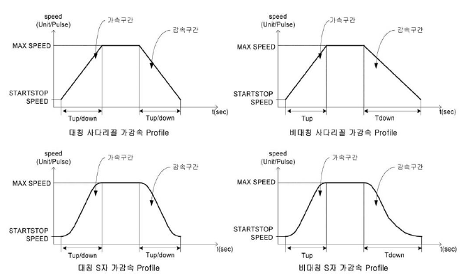
3) 시점 탈출과 종점 탈출
사용자가 프로그램에서 함수를 호출하였을 때,
그 함수를 언제 빠져나가서 프로그램 상의 다음 명령을 실행시키는가를 의미하는 것이 시점 탈출과 종점 탈출이다.
● 시점 탈출
모션 구동 시작과 동시에 프로그램 상의 다음 명령어로 진행하는 것을 말한다.
즉, 모션 구동 함수가 실행되어 모터의 움직임이 시작될 때 함수를 탈출한다는 뜻이다.
이 방식은 PC의 CPU를 점유하지 않고 바로 프로그램 상의 다음 명령어를 처리할 수 있다는 장점이 있으며,
현재 모션 구동이 종료되었는지 또는 아직 모션 구동 중인지를 사용자가 판단하여 다음 구동을 실행하여야 한다.
● 종점 탈출
모션 구동 함수 리턴이 해당 모션 이동을 완료한 후에 일어나며,
이 함수를 실행하는 동안 PC의 CPU를 점유하여 프로그램 상의 다음 명령으로 넘어가지 않는다.
종점 탈출 모드 사용 시 주의할 사항은 Inposition 신호(기능)을 사용할 경우 비 정상적인 상황에(예. 결선 오류, 서보 드라이브 설정 오류, 튜닝 오류) 지속적으로 구동 함수를 벗어나지 못하는 상황이 발생할 수 있으며, 제어 프로그램이 단일 스레드로 작성되었다면 모션 구동 중에는 아무런 동작을 할 수 없게 된다.
4) 상대 위치 구동과 절대 위치 구동
주어진 구동 명령이 상대 좌표로 이동할 것인지, 절대 좌표로 이동할 것인지를 구분할 필요가 있다.
상대 좌표계에서는 함수의 인자로 주어진 거리에 대해서 현재 위치를 기준으로 그 거리만큼 움직이게 되고,
절대 좌표계에서는 주어진 거리에 대해서 현재 위치를 뺀 거리만큼 움직이게 된다.
AxmMotSetAbsRelMode 함수를 이용하여 설정하는데, 절대 위치 구동에서는 0점이 존재해야만 절대 좌표를 구성할 수 있기 때문에
원점 검색을 반드시 행하여 0점을 잡은 후에 사용하여야 한다.
상대 좌표 또는 절대 좌표를 설정하고자 한다면 다음과 같이 하면 된다.
// 절대 위치 구동으로 설정. long lAxisNo = 0;
DWORD uAbsRelMode = 0; // [0] 절대 좌표, [1] 상대 좌표
AxmMotSetAbsRelMode(lAxisNo, uAbsRelMode);
현재 설정되어 있는 값을 확인하고자 한다면 다음과 같이 하면 된다.
// 설정된 이동 모드를 읽는 함수.
long lAxisNo=0;
DWORD uAbsRelMode;
AxmMotGetAbsRelMode(lAxisNo, &uAbsRelMode);
if(uAbsRelMode == 0)
printf(“절대 위치 구동 중”);
elseif(uAbsRelMode == 1)
printf(“상대 위치 구동 중”);